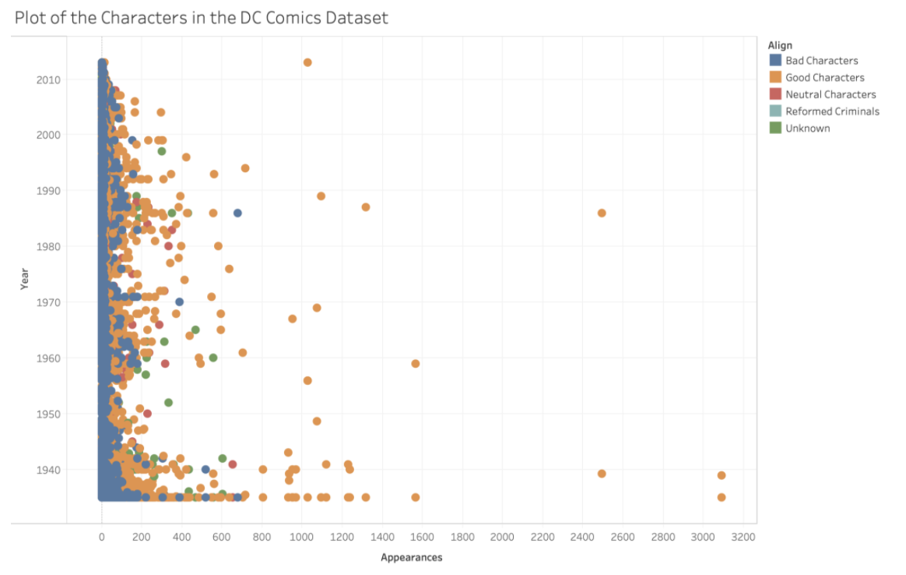
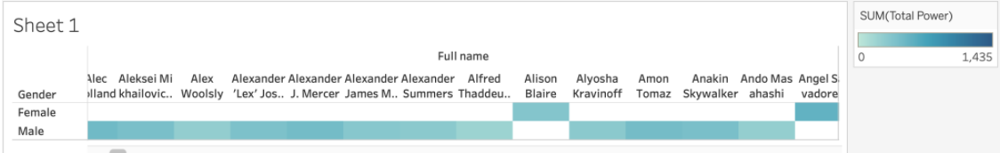
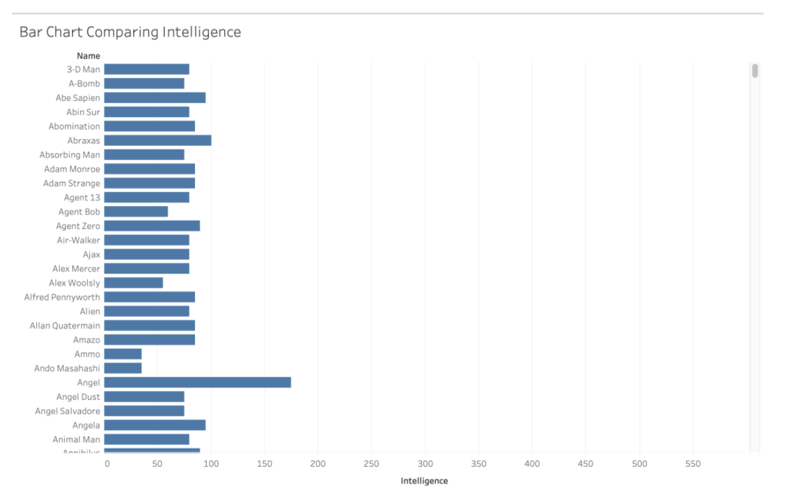
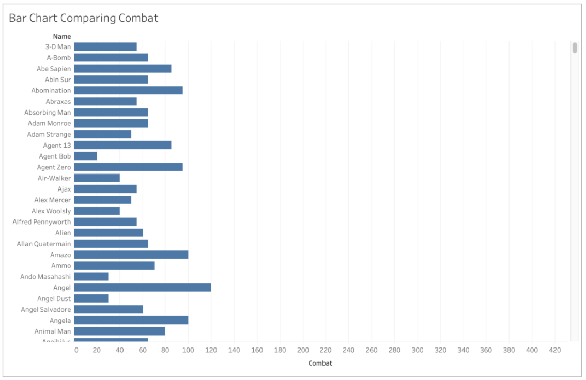

Overview of Project
Project is to create an interactive
visualization that will enable users to play with the data and find
different types of information about the comic book characters.
Features Completed
Preprocessing of Data
Upcoming Milestones
The next milestone in the project would be to use D3 to make all these visualizations in a
static way first before adding any visualizations.
Roadblocks
While creating the graphs for the Alpha Release, I had difficulty creating the
node-link diagram. Does data for a network graph need to be stored in some
special way ?



